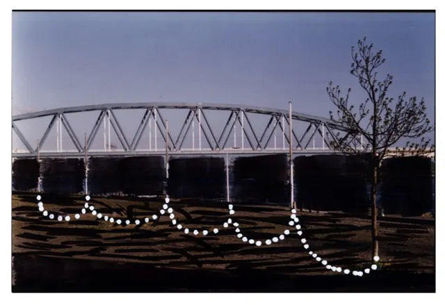
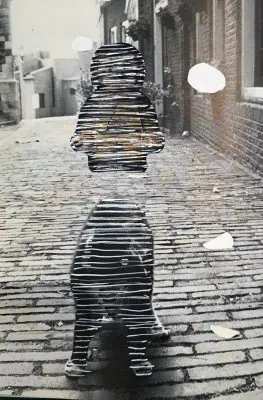

Nieuws ·
Ernie Bossmann sluit periode als Stadstekenaar Nijmegen af met expositie in Valkhof Museum

Twee jaar lang was Nijmegen haar grootste inspiratiebron. Stadstekenaar Ernie Bossmann doorkruiste de oudste stad van Nederland en verzamelde op haar tochten verrassende materialen, plaatjes van lokale helden, en zelfs Star Wars stickers. Ze verknipte en combineerde haar vondsten tot ware kunstwerken. Van 6 september t/m 6 oktober toont ze haar stadscollages in het Valkhof Museum, De tentoonstelling Stadsgezichten is onderdeel van het The Big Draw festival.

Een kunstzinnige verkenning van Nijmegen
Iedere twee jaar kiest Nijmegen een nieuwe Stadstekenaar. Een artistieke vijfkoppige commissie kiest het meest aansprekende plan en geeft groen licht aan de nieuwe Nijmeegse kunstenaar. Elke Berndes, René Brouns en Gabi Rets gingen Ernie Bossmann voor. In september geeft zij op haar beurt het stokje – of beter gezegd, het potlood – over aan de volgende kunstenaar. Deze wordt op 6 september bekendgemaakt.
Stadsgezichten in knipsels
Stadstekenaar
Bij de kringloopwinkel, op zolder en uit de wijkkrant; overal vindt Bossmann haar materiaal. Ze knipt, plakt en combineert tot kunst. Soms alleen, maar vaak samen met anderen tijdens tekenfeestjes. Steevast in haar citroengele tweedehandse pak, om de bijzondere rol en het feestelijke karakter van het geheel te onderstrepen.
Door verzamelde beelden en materialen samen te voegen en te lijf te gaan met de motto ‘stift erover’ ontstaan stadsgezichten vol beeldrijm. Herkenbare Nijmeegse elementen zoals de Waalbrug vloeien op papier samen met anonieme koppen of grafische figuren. Ze geeft haar werk graag terug aan de stad: in de wijkkrant, in boekvorm en nu ook in de afsluitende tentoonstelling Stadsgezichten.
In de bedrijvengids: Valkhof Museum